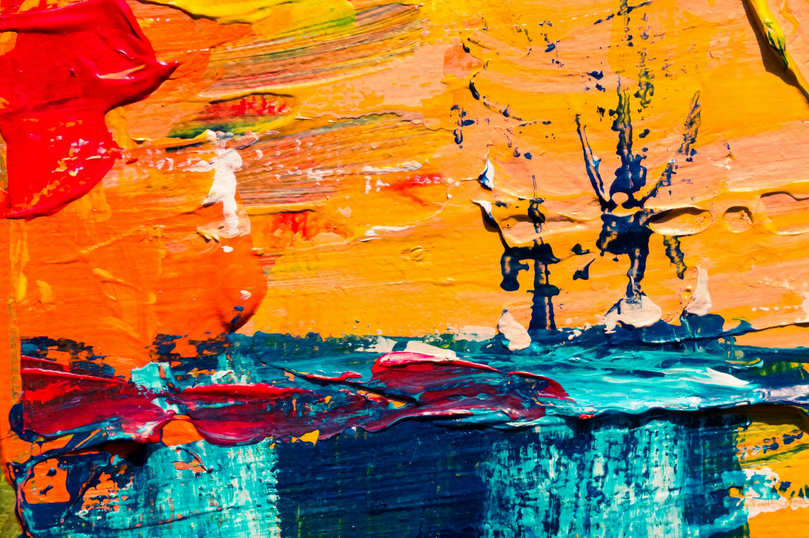

About Paint
Acrylic is used more widely for fun projects done in a quicker fashion. It dries fast and then becomes water resistant, which makes it great for outdoor projects. It can be harder to blend, one reason being is it dries a darker hue. Though it is still a rather vibrant paint that can easily compare to its counterparts. Some well-known artists who use acrylic are Andy Warhol and David Hockney. Watercolor is a very water-based paint. It dries transparent, causing a need for more layers in order to create depth in a piece. The term "watercolor", or aquarelle, refers to the more classic watercolor pallete where its paints focus on transparency, and more water is required than most other kinds of paint. Some famous artists that have created pieces in watercolor are Vincent Van Gogh and Leonardo da Vinci. Oil paint is likely the most popular type of paint, relative to acrylic. It is oil based, so instead of using water to blend, things like turpentine or thinning agents are required. It blends very easily since it dries very slow, so returning to a piece after a period of time is much easier and possible for continuous blending. This helped artists create larger, more detailed, and more realistic paintings. Its popularity peaked in the 16th century within contemporary art. The most popular paintings in oil are Mona Lisa, Starry Night, and Girl With The Pearl Earring. Gouache is technically considered a type of watercolor, since it is requires water in order to paint with it. However, it is different than classic watercolor since it is created to be opaque. It dries flat and very vibrant, making it a great medium for comics or posters. A couple artists that used gouache were Pablo Picasso in Head of a Woman, and Wifredo Lam in The Jungle (La Jungla).
Photos of Acrylic and Watercolor
